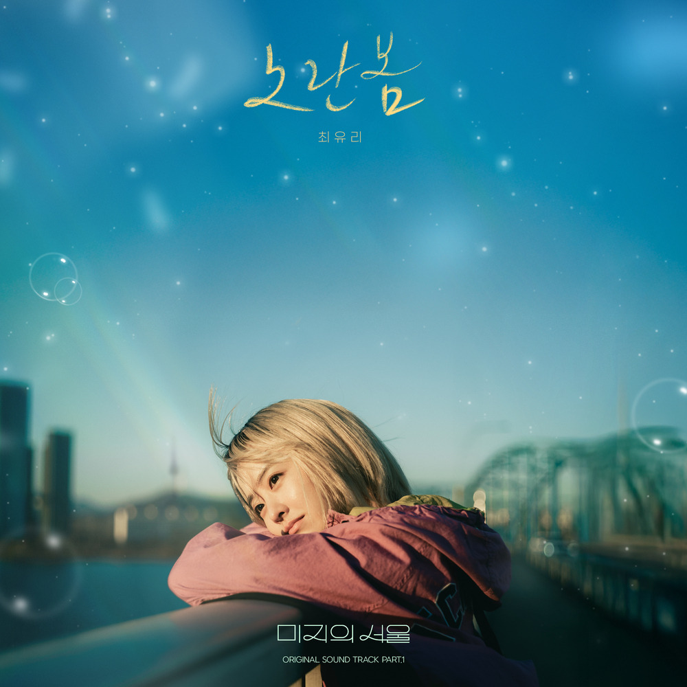

안녕하세요, 라보엠입니다.
오늘은 tvN 토일드라마 ‘미지의 서울’의 첫 번째 OST, 최유리의 ‘노란봄’을 소개해드리려구요. 2025년 5월 31일 공개된 이 곡은 드라마 속 미지(박보영 분)와 수호(박진영 분)의 과거 회상 장면에 삽입되어, 풋풋한 감성으로 극의 몰입도를 한층 높였습니다. 따스한 어쿠스틱 사운드와 최유리 특유의 부드러운 음색이 어우러져, 어린 시절의 추억과 다시 만나는 봄날의 설렘을 고스란히 전해주고 있습니다.

담백한 어쿠스틱, 그리고 맑은 리코더
‘노란봄’은 도입부부터 맑은 리코더 소리가 흐르며, 어쿠스틱 기타의 담백한 반주와 최유리의 섬세한 보컬이 조화를 이룹니다. 음악감독 남혜승과 작곡가 박진호가 손을 잡아 완성한 곡으로, ‘도깨비’, ‘미스터 션샤인’, ‘사랑의 불시착’ 등 수많은 명작 OST를 탄생시킨 그들의 감각이 이번 곡에도 고스란히 녹아 있습니다.
최유리의 목소리는 언제나 그렇듯 담백하면서도 깊은 여운을 남기죠. 어린 시절의 순수함, 그리고 시간이 지나도 변하지 않는 소중한 기억을 노래하며, 듣는 이의 마음을 따뜻하게 감싸줍니다. 곡의 서정적인 분위기는 드라마의 감성적 서사와 완벽하게 어우러져, 장면의 감동을 더하고 있습니다.
가사에 담긴 추억과 성장의 메시지
1.
나는 그 무렵 어딘가
기억의 끈 따라 떠나
작은 창가 너머 비친
우리들 모습이 보이지
지나온 날 어디쯤일까?
까마득한 추억인데
마른꽃잎 책갈피 해둔
그때를 펼치면 난 아직도
빛이 바래면 바랜대로
너무 아름다웠었던
우리 함께 했던 어느날
희미해지면 해질수록
더욱 반짝이는 조각들이
노랗던 그 봄 우리
2.
오래 묵혀둔 추억들
무르익을 무렵 어느날
그때를 다시 열어보면
아프고도 찬란했던
아름다운 기억 조각들
내모든 행복이 다 있었던
우리, 그 때
빛이 바래면 바랜대로
너무 아름다웠었던
우리 함께 했던 어느날
희미해지면 해질수록
더욱 반짝이는 조각들이
노랗던 그 봄 우리
br.
너무 아름다웠었던
우리 함께 했던 어느날
후회 없는 그해 어느밤
잊지 못할 너와 우리의
그해의 봄, 그 때
바래면 바랜대로
너무 아름다웠었던
우리 함께 했던 어느날
희미해지면 해질수록
더욱 반짝이는 조각들이
노랗던 그 봄, 우리
‘노란봄’의 가사는 지난 시간을 되짚으며, 그 안에서 피어나는 아련한 감정과 희망을 섬세하게 포착합니다.
“기억의 끈을 따라 작은 창 너머로 보이는 우리,
마른 꽃잎 책갈피를 펼치면 그때의 내가 그대로 남아 있어”
이처럼, 노래는 어린 시절의 소중한 순간과 그 시절 함께 했던 사람들을 떠올리게 합니다.
“어두워질수록 더 빛나는 조각,
노란 봄… 우리가 함께했던 그날”
이 구절은, 시간이 흐르고 어둠이 찾아와도 그때의 추억만큼은 더욱 빛난다는 사실을 전합니다.
드라마 ‘미지의 서울’이 쌍둥이 자매의 성장과 진짜 자아를 찾아가는 여정을 그리듯, ‘노란봄’ 역시 지나온 시간 속에서 자신을 되돌아보고, 다시 앞으로 나아갈 용기를 건넵니다. 곡의 마지막에는 “그 봄, 노랗게 물들던 그날 우리가 있었다”는 메시지로, 누구에게나 소중했던 봄날의 한 페이지를 상기시켜줍니다..
최유리의 감성적 보컬과 OST 명가의 만남
가수 최유리는 ‘숲’, ‘동그라미’, ‘오랜만이야’ 등에서 보여준 특유의 감성으로 이미 많은 사랑을 받고 있습니다.
이번 ‘노란봄’에서도 그녀만의 따스하고 맑은 음색이 곡의 분위기를 완성합니다. 최근 ‘갯마을 차차차’, ‘눈물의 여왕’, ‘환승연애’ 등 다양한 OST에 참여하며, 여성 보컬 부문에서 브랜드 고객 충성도 대상을 수상하는 등 독보적인 존재감을 입증했습니다. 음악감독 남혜승과 박진호의 세련된 편곡, 그리고 기타 이태욱, 드럼 은주현 등 실력파 세션의 참여로 곡의 완성도는 한층 높아졌습니다.
맺음말
미지의 서울 OST ‘노란봄’은 봄날의 찬란함과 지나간 시간의 아련함, 그리고 다시 시작할 수 있는 용기를 노래하고 있습니다.
최유리의 섬세한 보컬과 담백한 어쿠스틱 사운드, 그리고 따뜻한 가사가 어우러져, 듣는 이의 마음에 오래도록 남는 여운을 남깁니다. 오늘 하루, ‘노란봄’을 들으며 여러분의 소중한 추억과 다시 맞이할 새로운 봄을 떠올려보는 건 어떨까요?
‘미지의 서울’과 함께, 최유리의 음악이 여러분의 일상에도 따스한 온기를 전하길 바랍니다.